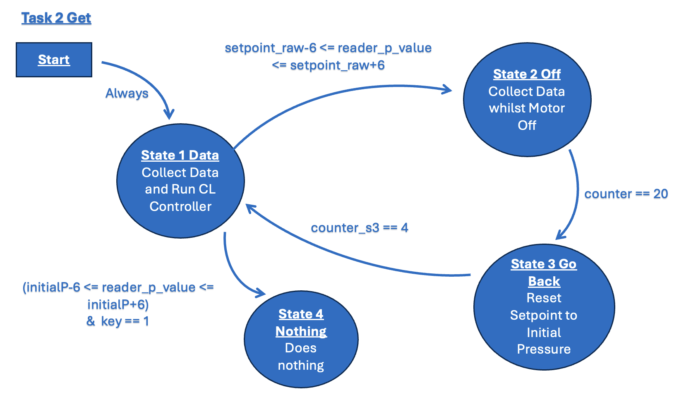

ME 405 Term Project
Introduction
Below are the following three classes used to implement our main program. Following, are the Tasks and Finite State Machines to describe our main program.
Software Description and Organization
Pressure Sensor Class
- def init: Initialize the PressureSensor Object. Collect initial data values for status and initial pressure.
- def readP_Raw: Reads Raw Status, Pressure, and Temperature Data from Sensor
- def PtoRawP: Converts setpoint pressure from units of psi to counts.
- def RawtoData_P: Converts raw pressure data in units of counts to [psi]. Then pressure difference from initial pressure and thus displacement depth
- def RawtoData_T: Converts raw pressure data in units of counts to [Fahrenheit].
Motor Driver Class
- def init: Creates a motor driver by initializing GPIO pins and turning off the motor for safety.
- def set_duty_cycle: This method sets the duty cycle to be sent to the motor to the given level. Positive values cause torque in one direction, negative values in the opposite direction.
Closed-Loop Controller Class
- def init: Inits the Controller object with the provided proportional gain and set points.
- def run: Runs the controller and calculation for the actual values based by the measured output.
- def set_setpoint: Takes in a desired set point. Sets new setpoint for class
- def set_Kp: Takes in a desired Kp value. Sets new Kp for class
Main Program
Our main program handles multitasking between different tasks using cotask.
Task Diagram
Below is the task diagram for our main program. There are two tasks.

ME405 Main Program Task Diagram
Task 1:
- Gets time and pressure out of a queue and the current Task 2 value out of a share.
- Converts pressure from units of counts to [psi] and displays value along with corresponding depth underwater in [ft] and time duration.
Task 2:
- Converts desired setpoint from units of [psi] to counts using Pressure Sensor Class
- Reads pressure sensor data in units of counts from Pressure Sensor Class.
- Runs closed-loop controller with pressure counts comparing against setpoint to send motor PWM commands.
- Puts time duration and pressure into queue
Finite State Machines
Below are the Finite State Machines (FSM) corresponding to the two tasks in our main program.

ME405 FSM Task 1

ME405 FSM Task 2